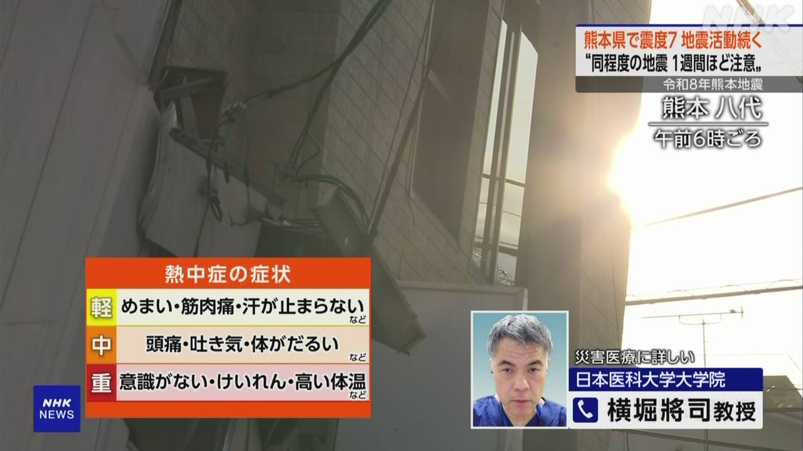

最新ニュース
1️⃣ 熊本の地震 1週間ぐらいは大きい地震に気をつけて

28日の夕方、熊本県で大きい地震がありました。
いちばん強く揺れたところは、震度7でした。
熊本県では建物が倒れるなど大きい被害が出ています。
この地震のあとも、強い地震が続いています。
気象庁は「1週間ぐらいは、同じぐらい大きい地震がまたくるかもしれません。これから3日ぐらいは特に気をつけてください」と言っています。そして「海で大きい地震が起こった場合は、津波に気をつけてください」と言っています。
2️⃣ 熊本の地震 とても大きい被害が出ている

熊本県によると、この地震で12人が亡くなるなど、とても大きい被害が出ています。
嘉島町のショッピングセンターでは、大きい爆発が起こって建物が壊れました。3人が亡くなりました。
八代市にある工場では、煙突が折れて建物が壊れました。5人が亡くなりました。
熊本県では9000人ぐらいの人が避難しています。
今も、電気や水道が止まっているところがあります。鉄道や道路などの交通にも大きい影響が出ています。
3️⃣ 地震のときは頭を守ってください

このあとも大きい地震が来るかもしれません。
地震のときは、テーブルの下などに入って揺れるのが止まるまで待ちましょう。
上から物が落ちてきたり、棚などが倒れたりして危険だからです。
外にいたら、かばんなどで頭を守ってください。
車を運転していたら、ゆっくり止めてください。
エレベーターに乗っていたら、いちばん近い階のボタンを押して降りてください。
地震で気をつけること
4️⃣ 暑い季節の避難 熱中症に気をつけよう

今はとても暑い季節です。避難しているとき、熱中症にならないように気をつけましょう。
トイレに行くのを我慢して水をあまり飲まない人がいます。専門家は、水を飲むことは大事だと言っています。水を何回も飲んで、うちわなどを使って、できるだけ涼しくしてください。
車の中で避難する場合は、車を太陽の光が当たらない涼しい所にとめましょう。
お年寄りや子どもは熱中症になりやすいので、周りの人が気をつけてあげましょう。
家の片づけをするときは、必ず2人以上でしましょう。相手が元気かどうか見ながら片づけができます。
- 〜がある / 〜がいる
- 〜ところ
- 〜など
- 〜ている / 〜でいる
- 〜後 / 〜あと
- 〜かもしれない / 〜かもしれません
- 〜くらい / 〜ぐらい
- 〜てください / 〜でください
- 〜から
- 〜ても / 〜でも
- 〜によると
- 〜や〜など
- 〜ましょう / 〜ましょうか
- 〜まで
- 〜たり〜たりする
- 〜こと
- 〜になる
- 〜ように
- 〜ならない
- 〜だけ
- 〜中
- 〜ので
- 〜やすい
- 〜てあげる / 〜であげる
- 〜以上
- 〜ず / 〜ずに
- 〜ながら
vebaev.github.io
Generated: 2026-07-29 11:27:07 UTC